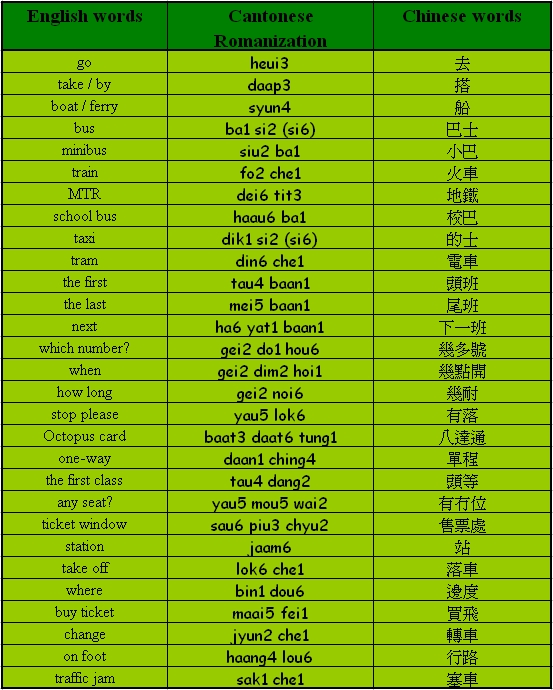

Unit 9 Transportation
Unit 9 Transportation 
Objectives
- To recognize and pronounce Cantonese words with the initials [b], [d], [t], [y], [ch];
- To recognize and pronounce Cantonese words with the finals [e], [eui], [o], [aat], [ei];
- To use simple Cantonese vocabulary and expressions to describe transportation.

Warm up Work together.
- How do you call the waiter who works in a Chinese restaurant?
- Have you been to the Chinese restaurant? What did you order?
Vocabularies

Sentence structure
Auxiliary – AV (S AV V O)
Common auxiliary verbs: seung2 (want), ho2 yi5 (can), jung1 yi3 (like), yiu3 (need), sik1 (know).
You can take the No.271 bus.
你可以搭二七一號巴士。
[nei5 ho2 yi5 daap3 yi6 chat1 yat1 hou6 ba1 si6.]
I want to go to Taipo Centre.
我想去大埔中心。
[ngo5 seung2 heui3 daai6 bou3 jung1 sam1.]
You can pay by Octopus card.
你可以用八達通俾錢。
[nei5 ho2 yi5 yung6 baat3 daat6 tung1 bei2 chin2.]
Conversation Practice with a partner.
Scene: Sally is teaching Linda how to go to Taipo Centre.
Linda: I want to go to Taipo Centre. Do you know which number bus can I take?
我想去大埔中心，你知唔知搭幾多號巴士呀？
[ngo5 seung2 heui3 daai6 bou3 jung1 sam1, nei5 ji1 ng4 ji1 daap3 gei2 do1 hou6 ba1 si6 a3?]
Sally: You can take the No.271 bus.
你可以搭二七一號巴士。
[nei5 ho2 yi5 daap3 yi6 chat1 yat1 hou6 ba1 si2.]
Linda: Where do I get off?
我可以喺邊度落車？
[ngo5 ho2 yi5 hai2 bin1 dou6 lok6 che1?]
Sally: You can get off at the fifth stop.
你可以喺第五個站落車。
[nei5 ho2 yi5 hai2 dai6 ng5 go3 jaam6 lok6 che1.]
Linda: How should I pay?
點樣買飛㗎？
[dim2 yeung6 maai5 fei1 ga3?]
Sally: You can pay by Octopus card.
你可以用八達通俾錢。
[nei5 ho2 yi5 yung6 baat3 daat6 tung1 bei2 chin2.]
Quiz
- Can you say the following words in Cantonese – ‘stop, please’?
- Do you know which transport you can take in order to go to Taipo center?
- Do you need to ‘maai5 fei1’ if you want to take the school bus?
Make Cantonese sentences with your own choice of words following the pattern:
I go to ___________ by ___________.
e.g. I go to Mongkok by train.
[ngo5 daap3 fo2 che1 heui3 Wong6 Gok3.]